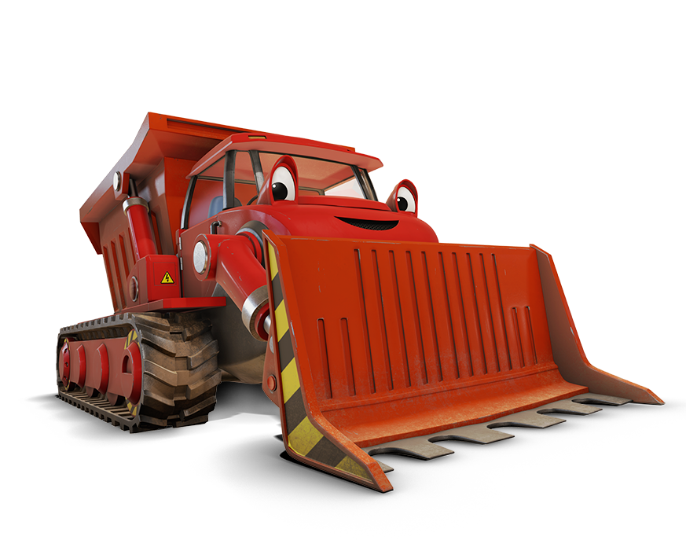

Muck
Muck is a red bulldozer with a dumping bed. She is one of the least mature machines and loves to get muddy. She often acts before thinking, which often gets her into trouble. Muck is afraid of the dark, but actually manages to be calm about it. She is one of the most kind-hearted machines, but often tends to be silly. In the end she always learns her lesson. Muck can resemble the children watching in many ways, with the ways she acts and learns from her mistakes.